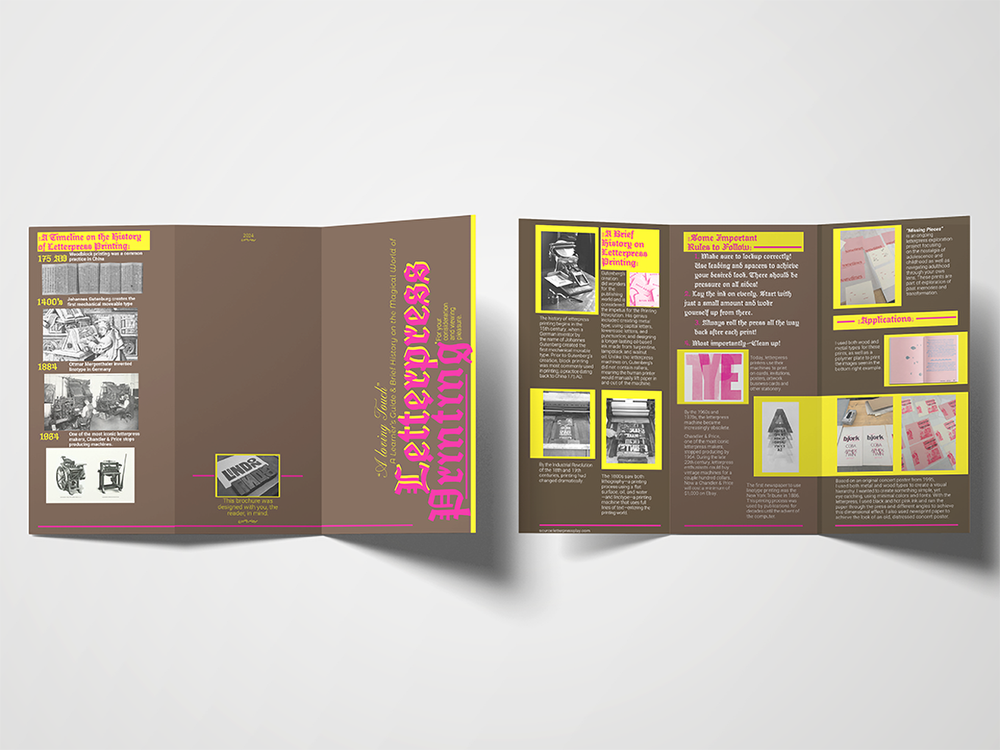

three panel brochure
BThis project was created as an exploration of the intricate process of letterpress printing. Through this exploration, the aim is to gain a comprehensive understanding of the artistry and mechanics behind letterpress printing, as well as to mend the modern aspects of design, with techniques and aesthetics that would have been popular during the invention of the letterpress. All printing was done in house on 8.5” x 11” paper and tri-folded to create a brochure.